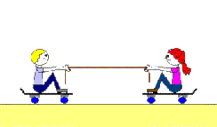

Every action has a reaction equal in magnitude but opposite in direction.
This means that whenever an object interacts with any other object, there exists a pair of interaction forces acting on both objects.
The third law of motion is also called the action-reaction law. Both the action and reaction forces act on the objects simultaneously.
If both the forces are equal in magnitude, equilibrium is maintained, and the object does not move.
In such a case, a balanced force is said to be existing. If one of the forces is greater than the other, the object is subjected to motion, and an unbalanced force exists.
Newton’s third law of motion is also known as the law of interaction.
Examples of Third law
The trapped air in the rock move out as the rocket up and the resulting
force propels the rocket up

Two children standing on a wheeled bench placed on a flat
ground pull the rubber band in their hands and two move in opposite directions.